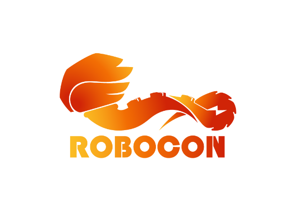
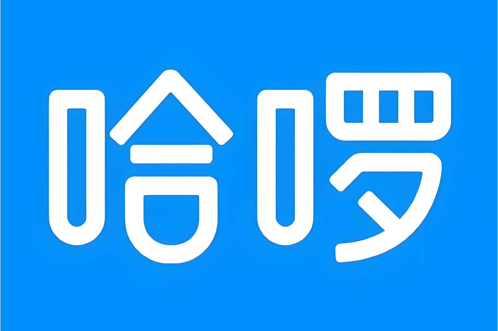

TJ
2023.09 - 2027.07
B.Eng. Student at Tongji University
Undergraduate student in Mechatronics Engineering at the School of Mechanical Engineering and Robotics, Tongji University.
I am an undergraduate student in Mechatronics Engineering at the School of Mechanical Engineering and Robotics, Tongji University. My interests include robotics, intelligent manufacturing, autonomous driving, embodied AI, control, and optimization.
At a Glance
Undergraduate student in Mechatronics Engineering at the School of Mechanical Engineering and Robotics, Tongji University.
Participated in more than ten professional competitions and received 2 national awards and 11 provincial awards across algorithm, mechanical, innovation and entrepreneurship, and electronics categories. Rebuilt the Tongji University Robocon Robotics Team, organized and wrote technical materials for mechanical design, electrical control, and algorithms, developed competition strategies and technical plans, and trained multiple core team members.

Led the development of the DP180 multi-camera loop-closure localization algorithm and the long-range, long-duration LiDAR 3D mapping algorithm.
Worked on end-to-end algorithm engineering during an internship at Hello Inc.

Conducting research assistance work in AutoLab, focusing on intelligent systems and AI-related engineering research.
Profile
Research Interests
Experiences
Learning mechanical engineering, manufacturing technology, automatic control, programming, and robotics-related coursework.
Interested in cross-disciplinary engineering problems involving robotics, intelligent manufacturing, and autonomous systems.
Working with Python, C/C++, MATLAB, CAD/CAE tools, Git, and simulation workflows for coursework and personal exploration.
I am open to conversations about robotics, intelligent manufacturing, control, engineering projects, and research opportunities.